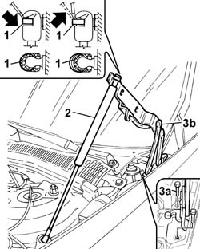

7025A18 l/h or r/h bonnet lid hinge (one) - r+r with lid removed
- Path
- Procedures > 70 FITTINGS > 7025 COMPARTMENT LIDS > 7025A BONNET LID > 7025A18 l/h or r/h bonnet lid hinge (one) - r+r with lid removed
- Kind
- repair procedure (removal / refitting; the operation number is the code)
- Applies to
- all engines; all production periods
- Interactive page
- https://sloeber94.github.io/elrnDB-lThss/en/#/80204
Applies to: all engines; all production periods
 Removing
Removing
 Refitting
Refitting1. Release the retaining spring, using a screwdriver (without removing it).
2. Detach the telescopic strut, bonnet side.
3. Undo the bolts (3a) and remove the bonnet hinge (3b).

Applies to: all engines; all production periods
Refitting
Removing- Place the hinge in position and screw in the bodyshell side fixing bolts, without tightening them to torque.
- Fit the end of the telescopic strut in the housing in the bonnet hinges.